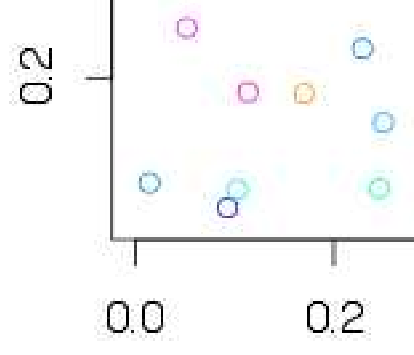
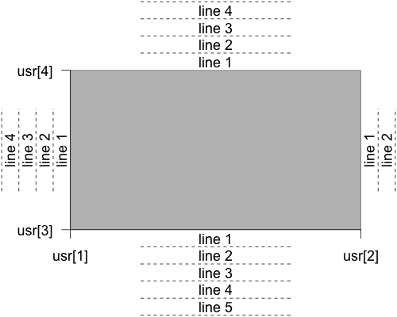
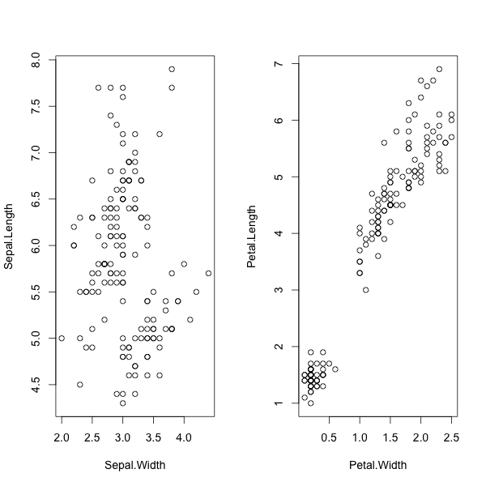
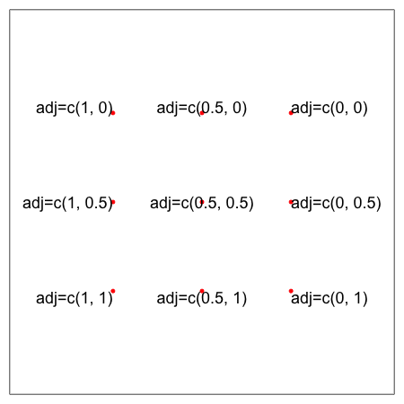
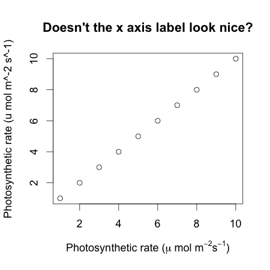

Plotting
Plotting is different to the other types of things you do with R – even when done as “nicely” as possible it might require many lines of code. This is because making really nice figures is something that requires some finesse as you move between science and art. Good figures carry a lot of impact, and to deliver this, you often have to think carefully about each line, about relative sizes of everything, about the spacing of the figures, amongst other things.
Before going into how to do everything in R, it is worth considering if you should use R for everything. Sometimes a graphics editing program (like Illustrator or Inkscape) will be faster, especially for adding pictures, making maps, or doing complicated graphics composed of many pieces. Fundamentally, R just gives you a blank device as a canvas, so anything is possible, but it may just be very awkward or time consuming. If you do persevere, the benefits include:
- Reproducibility – can go from raw data to final figure.
- Helps you rework figure after review.
- Helps you rework figure for different talk (colour scheme, etc).
- Eventually faster, and time spent learning pays back later.
- Build up a library of tricks.
Plotting workflow
A common workflow for making figures is to
- Plot a bunch of stuff to screen
- Resize the device until it looks about right
- Save the output (File: Save, or similar)
There are several problems with this approach:
- The figure dimensions are only appoximate
- The figure is not very reproducible, because slight changes in size change the appearance
- Resizing the plot to get the right dimensions can be awkward
- It’s hard to generate many similar figures for a talk, or to generate different format output from the same piece of code.
We don’t encourage this approach.
Instead, we suggest this workflow:
- Open an appropriate plotting device (e.g., with
pdf– see below) - Plot a bunch of stuff, which goes to the device
- Close the device
In practice, you’ll tweak the figure (step 2) on the screen until you’re happy with it first.
What type of device?
There are two basic types of graphic – “vector graphics”, where the logical units are lines and shapes, and “bitmap graphics” (also called raster graphics, not to be confused with rasta graphics.
To see the difference: here are screenshots of part of a figure zoomed in about 4 times. The first image is taken from a pdf, with crisp lines, and the second is a png showing the underlying matrix of pixels that make up the image:


If you’re making plots for a paper, or for a talk, you almost certainly want vector graphics. These render nicely at all scales - you can zoom in and lines and text stay crisp (some journals still ask for high resolution bitmaps at the final stage of processing – sometimes a “tiff” file). For vector graphics, the PDF device is great for most things, and pdf files incorporate nicely into most document formats now.
If you’re making plots for the web, you probably want raster graphics, as there are few widely supported formats for vector graphics (svg is getting better support). For raster graphics,
In general, you want to make figures in png (Portable Network Graphics) format. Don’t make figures in jpeg format.
Here is a zoom of the same region of a plot as the figures above, showing “jpeg artefacts”:

This is because jpeg is a lossy compression algorithm; it’s designed to work well with images that are like photos, and does spectacularly badly with line art. Jpegs are great for cat pictures but not good at all for plots. Unfortunately, many journals will still butcher your beautiful vector figures by making them into jpegs at some point in their production workflow, so be vigilant.
Using the workflow
To make a PDF figure, you open the pdf device, add some plotting commands, and close the device:
1 2 3 | |
The width/height arguments are in inches (you can use the function
cm to get dimensions in centimeters, e.g., cm(10) returns the
number of inches required for a 10 cm plot), and at that size the
text will be in 12 point type. You can tweak that with the
pointsize arguments. This makes it really simple to work out what
the plot will look like on a page (e.g., in a journal). When you run
these commands, you will end up with a file called my_plot.pdf in
the current directory. If you’re using a project layout like
we suggested in this post,
then the filename might be figs/my_plot.pdf to put the figures into
the figs directory.
As the number of lines of code between pdf and dev.off grows, this
gets tedious. We find that it works well to make a function per
figure:
1 2 3 4 5 6 | |
and then use it like this:
1 2 3 | |
There are a number of advantages and extensions to this approach that we discuss in this post.
Figure layout
There are a lot of things that can be tweaked about figures using the
par command. The help page is very terse, but worth looking through
to get an idea of what can be tweaked. Obviously, we can’t deal with
all possible parameters, as it’s a huge set.
Margins
There are two ways of specifying margins; by physical size (in inches
again) and in lines of text. Because you’re mostly going to be
putting text into the margins, it is much easier to scale margins by
the text size. The commands par("mai") and par("mar")
return the size of the margins in inches and lines of text
respectively. By default,
1 2 3 4 | |
This vector is refers to the edges of the plot from the bottom (first element) clockwise (i.e., bottom, left, top, right). You can visualise the lines of text this way:

There are other relevant dimension attributes for multipanel plots:

Making a nice figure
In class, we’ll work through a number of tricks to convert this figure:

into something nicer:

(both of these actually look substantially nicer in something scalable, so here is a svg output for people with browsers who can render them)

Code that steps the development process is available as a gist.
Other tricks that people asked about:
Text layout
You can easily tweak the alignment of text, using the adj parameter
(many graphical functions involving text accept this)

Scientific notation in axes
This is tricky, but with trial and error usually gives reasonable
results. See demo(plotmath) for a reasonably comprehensive tour of
the feature.
1 2 3 4 5 6 7 | |

Other resources
- Paul Murrell has written a great book on R Graphics, and also provides code from the book online here.
- You may also like to check out some of Paul’s talks, such as this one.
- Here is another intro to graphing in R, by Christoph Scherber.